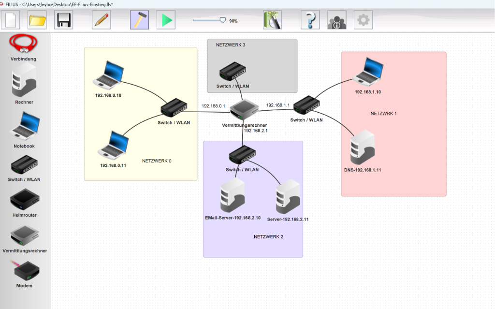
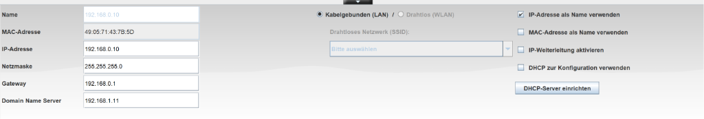
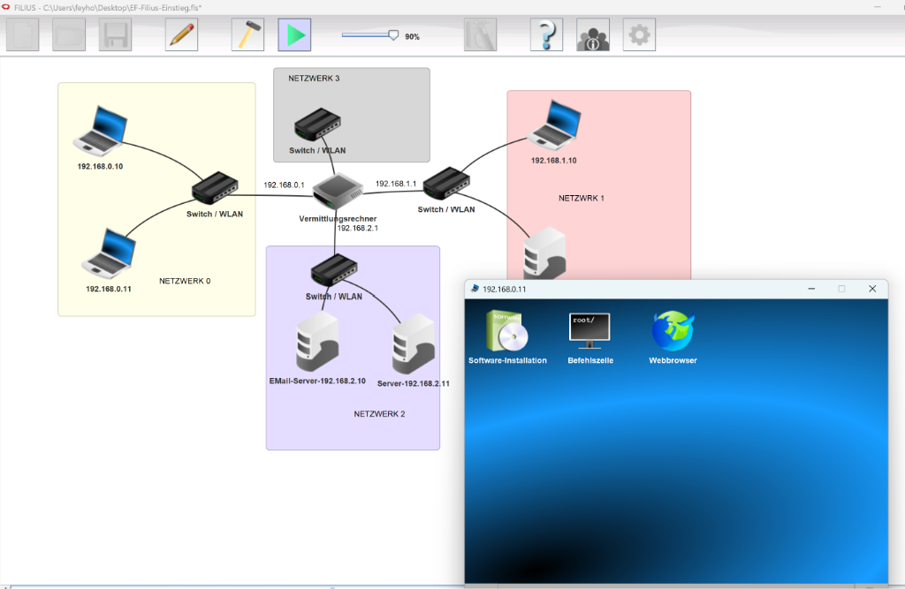

Wie kommunizieren Computer weltweit? Von der ersten direkten Verbindung bis zum weltweiten Internet mit Filius.
Für die meisten Menschen ist das Internet eine magische Blackbox: Man tippt auf den Bildschirm, und wie von Zauberhand funktioniert es. Als Informatiker lüften wir heute dieses Geheimnis:
Jedes internetfähige Gerät erhält beim Verbinden eine weltweit eindeutige logische Adresse: die IP-Adresse (z. B. 192.168.0.10).
Ähnlich wie ein Brief mit Stadt, Straße und Hausnummer versehen ist, weiß das Netzwerk durch die IP-Adresse exakt, wohin die Datenpakete vermittelt werden müssen.
Ein Ping ist ein minimales Kontrollpaket (Echo Request), das dein PC an den Game-Server schickt: „Bist du da?“. Der Server antwortet sofort mit „Ja, ich bin da!“ (Echo Reply).
Gemessen wird die Zeit für den Hin- und Rückweg in Millisekunden (ms). Ein Ping von 20 ms fühlt sich blitzschnell an – bei 200 ms reist das Signal spürbar verzögert durch die Leitungen.
Computer verstehen nur Zahlen (IP-Adressen). Menschen können sich aber Namen wie google.de oder youtube.com viel leichter merken.
Ein weltweites Netz von DNS-Servern fungiert als automatisches Telefonbuch: Bevor dein Browser eine Seite aufruft, fragt er blitzschnell den DNS-Server: „Welche IP gehört zu google.de?“ – und bekommt die Ziffernfolge zurück.
Wir bauen das Internet Schritt für Schritt im Simulator von der Basis bis zur weltweiten Vernetzung auf:
Im echten Schulnetzwerk können wir keine Kabel kappen oder Router verstellen. Filius ist unser virtueller Experimentierkasten: Wir können gefahrlos Netze entwerfen und – das Beste – in die Datenleitungen hineinsehen!

Starte jetzt Filius auf deinem PC. Folge der Anleitung Schritt für Schritt:
Vergewissere dich, dass du im Entwurfsmodus (Hammer-Symbol) bist. Klicke links in der Werkzeugleiste auf das Symbol Notebook und ziehe zwei Geräte nebeneinander auf das weiße Raster.
Wähle links ganz oben das Werkzeug Verbindung (Kabel-Symbol) aus. Klicke zuerst auf das linke Notebook und ziehe die Linie zum rechten Notebook. Ein schwarzes Kabel erscheint.
Klicke auf das linke Notebook, um die Einstellungen zu öffnen. Trage folgende Werte ein:
Wiederhole das für das rechte Notebook mit der IP 192.168.0.11 (gleiche Netzmaske).

Klicke oben in der Menüleiste auf den grünen Play-Button. Klicke anschließend mit einem Doppelklick auf das linke Notebook.
Es öffnet sich der virtuelle Desktop. Gehe auf Software-Installation, wähle die Befehlszeile aus und klicke auf den Pfeil nach links, um sie zu installieren. Starte die Befehlszeile anschließend mit einem Doppelklick!

Tippe in die schwarze Befehlszeile folgenden Befehl ein und drücke Enter:
Was passiert, wenn du in die Befehlszeile ping 192.168.0.99 eingibst? Warum schlägt dieser Ping fehl?
Und was passiert, wenn du zurück in den Entwurfsmodus wechselst und bei Notebook B die IP auf 192.168.1.11 abänderst? Probiere es aus!
Nach unserem Experiment mit dem gescheiterten Ping (192.168.1.11) halten wir die Spielregeln fest, nach denen Computer adressiert werden:
Eine IPv4-Adresse besteht immer aus zwei Hälften:
Computer haben keine Augen – sie wissen nicht von Natur aus, wo die Straße aufhört. Die Subnetzmaske dient als mathematische Schablone:
Der Blick hinter die Kulissen: Das Binärsystem!
Computer rechnen nicht im Zehnersystem, sondern in Bits (0 und 1). Eine IPv4-Adresse besteht aus 4 Blöcken à 8 Bits (= 1 Byte).
255 ist schlichtweg die größte Zahl, die man mit 8 Bits darstellen kann. In der Maske bedeutet 255: „Alle 8 Bits dieses Blocks gehören komplett zum Netzwerkteil!“
Im Block der Hausnummer (wo die 0 in der Maske steht) gibt es die Zahlen von 0 bis 255 (also 256 Möglichkeiten).
Wichtig: Genau zwei Adressen sind streng reserviert und dürfen keinem Rechner gegeben werden:
Die Netzadresse (z. B. 192.168.0.0): Das ist der offizielle Name des gesamten Netzwerks (der Straßenname). Sie steht für das Netz als Ganzes und darf keinem Endgerät gehören.
Die Broadcast-Adresse (z. B. 192.168.0.255): Das „Megafon“ des Netzes. Sendet ein Rechner an diese Adresse, empfangen alle Geräte im Teilnetz gleichzeitig die Nachricht (Rundruf).